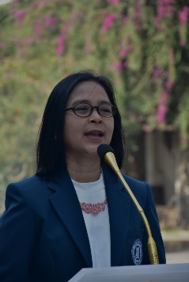

ITB - Book
Sambutan Rektor
 Pertama-tama, izinkan saya atas nama keluarga besar ITB menyampaikan selamat datang kepada seluruh mahasiswa baru ITB Tahun Akademik 2020/2021 di kampus ITB tercinta ini. Adalah kebanggaan bagi kami untuk menerima kedatangan Anda semua, putra dan putri terbaik bangsa Indonesia. Atau lebih tepatnya adalah, bagian dari generasi muda penerus, putra putri terbaik bangsa yang tersebar di berbagai perguruan tinggi di Nusantara. Dan bagi para mahasiswa baru dari mancanegara, adalah kehormatan bagi kami untuk menerima kedatangan Anda di sini, sebagai wujud dari persahabatan antarbangsa.
Visi
Menjadi Perguruan Tinggi yang unggul, bermartabat, mandiri, dan diakui dunia serta memandu perubahan yang mampu meningkatkan kesejahteraan bangsa Indonesia dan dunia. (Sumber: 09/SK/I1-SA/OT/2011)
Misi
Menciptakan, berbagi dan menerapkan ilmu pengetahuan, teknologi, seni dan kemanusiaan serta menghasilkan sumber daya insani yang unggul untuk menjadikan Indonesia dan dunia lebih baik. (Sumber: 09/SK/I1-SA/OT/2011)
Sejarah
Sejarah Pendidikan Tinggi Teknik di Indonesia berawal pada abad ke-20, ketika pemerintah kolonial Belanda mendirikan de Techniche Hoogeschool te Bandung (TH) pada 3 Juli 1920 di lahan seluas 30 hektar di Bandung. Saat itu hanya terdapat satu fakultas yaitu de Faculteit van Technische Wetenschap dan hanya satu jurusan yaitu de afdeeling der We gen Waterbouw. Pendirian perguruan tinggi ini dimaksudkan untuk memenuhi kebutuhan tenaga teknik yang semakin terbatas pada masa kolonial Belanda akibat pecahnya Perang Dunia pertama.